旅程首页
从索松村等一场雪峰露面，穿过鲁朗与波密的森林，把一个完整白天留给巴松措，再到拉萨街巷和山南寺院过年末。这份手册以2026年12月24日至2027年1月3日、11天10晚为工作版本，把每天怎么玩、哪里可选、怎样拍风景放在一起。
南迦巴瓦雪峰的金色时刻。图片为景观参考，见峰和光线取决于当日天气。来源：Trip.com，Evelyn Price~58。
主线保住南迦巴瓦、巴松措和拉萨。 来古待正式复开后再启用；白玛林措需使用完整三天改线方案。机票、酒店、包车尚未确认，景区公开核查截至2026年10月31日；每日停留是建议预算，冬季车程和开放范围仍需落实。
日期仍待最终确定：主线按12月24日出发、1月3日返程展开。12月23日出发、1月3日返程，以及12月25日出发、1月5日返程的历史版本，均收在“备选版本与路线库”；延长至1月5日的徒步方案见“徒步与改线”。
路线总览
林芝进，拉萨出；东行到然乌后折返，再经巴松措西行。 全程图中实线是主线顺序，虚线是可选支线，星号是住宿或当日终点。点位为近似WGS84参考，连线不是道路导航；途经地点也不等于每站游览。
| 旅程 | 日期 | 想留下的体验 | 当晚落脚 |
|---|---|---|---|
| 雪山与森林 | D1至D3 · 12月24日至26日 | 索松村看山，鲁朗到波密的林海与河谷 | 林芝／索松村 → 鲁朗 → 波密 |
| 湖泊与慢住 | D4至D6 · 12月27日至29日 | 然乌湖、长途西返、巴松措完整白天 | 然乌 → 巴松措两晚 |
| 城市与寺院 | D7至D11 · 12月30日至1月3日 | 拉萨跨年，桑耶与泽当，两寺后返拉萨 | 拉萨两晚 → 泽当 → 拉萨 → 返程 |
底图采用公开的道路、河流与湖泊几何；拉萨市内另用街道数据。来源：Natural Earth · OpenStreetMap及ODbL署名。部分小景点尚未确认精确入口，保留文字说明，不补画推测定位针。
11天逐日行程
每天依次看路线与住宿 → 当天安排 → 可选停靠 → 风景拍摄。当日地图保留在路线下方；拍摄表可点标题展开。可选点通常择一，增加徒步就替换原活动，绕行与接驳时间另计。所有照片均为历史景观参考，非冬季图片在图注中说明。
第一程 雪山与森林
D1至D3｜把时间留给雪峰显露与森林里的停步。 索松村以晨间观山为主；想守日落，就先调整住宿。鲁朗牧场、古乡湖和岗云杉林按当天余量取舍。
D1 · 12月24日｜抵达林芝
上海 → 成都 → 林芝机场 → 派镇 → 索松村｜住：索松村或林芝市区｜节奏：抵达与休息。 落地偏晚则留宿市区，次日再去索松村。
| 时段 | 当天安排 |
|---|---|
| 出发与中转 | 按实际机票衔接上海、成都与林芝；同日抵达林芝是11天版本的前提 |
| 抵达后 | 先用餐、入住与休息；仅在抵达较早、状态合适且司机确认可在白昼抵达时，直接去索松村 |
| 傍晚与晚上 | 在住宿附近短走或看山，早点休息；若需要成都中转过夜，须核减后续活动或延长一天 |
可选停靠与短走
| 选择 | 建议预留 | 放进当天的条件 |
|---|---|---|
| 林芝市区附近开放的尼洋河滨水步道 | 20至40分钟 | 仅在住市区、入住后仍有体力时选择，不再专门开车去远处湿地 |
| 索松村住宿附近的村道与观景处 | 15至30分钟 | 仅在直接入住索松村时选择；两种首晚安排择一 |
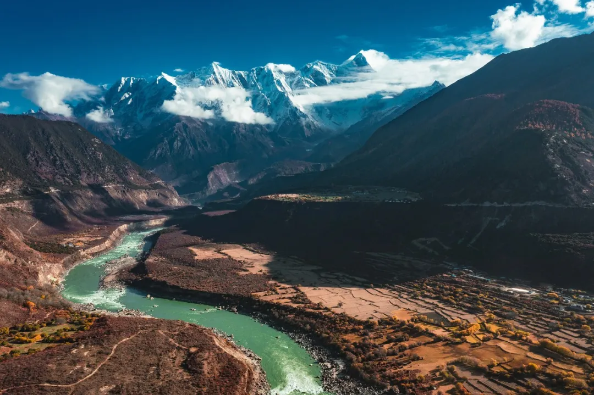
雅鲁藏布大峡谷的河谷与雪山。用于索松村方向的区域景观参考，非指定民宿或村道入口。 来源：林芝市文旅局发布。
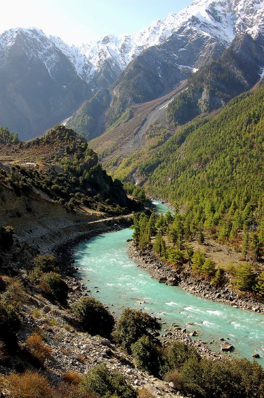
尼洋河河谷。照片摄于工布江达附近，说明河谷景观，不能用来定位林芝市区滨水步道。 来源：Gao from Beijing, China；CC BY 2.0。

当天不安排正式徒步。河谷景观可参考林芝文旅的尼洋河介绍；所列分钟数是停留预算。
风景拍摄与机位
| 拍摄亮点 | 机位怎么找与站位 | 镜头与构图 | 光线与滤镜 |
|---|---|---|---|
| 索松村的南迦巴瓦与村落同框 | 导航“索松村”，先在已入住民宿的合法观景区或村内公共道路找无遮挡位置；把屋顶或树枝放在下方，避开电线 | 16–50的23–35mm拍村落与山；70–300的100–200mm拍主峰 | 只有抵达早、已在村里才等傍晚金色山尖；不用ND，CPL先不装 |
| 林芝市区的尼洋河与远山 | 住市区时，选酒店附近可直接步行到的尼洋河滨水步道，站在步道向河道延伸方向拍；不专程转场找网红点 | 16–35mm用岸线引导到远山；70–150mm截取重叠山脊 | 傍晚侧光有层次；手持优先保持快门，天暗就卸CPL |
| 飞机窗外的雪峰 | 有可见雪峰时，从自己座位靠窗拍，镜头接近玻璃但不顶住；避免机翼遮住主体 | 16–50的35–50mm，先拍一张留足天空与地面边缘的画面 | 约1/1000秒起试；窗上不建议用CPL，可能出现不均匀色斑 |
D2 · 12月25日｜索松村 → 鲁朗
索松村 → 派镇 → 林芝市区方向 → 色季拉 → 鲁朗｜住：鲁朗｜节奏：上午看山，午后转场。 若D1住林芝，当天先去索松村，并减少后续停靠。
| 时段 | 当天安排 |
|---|---|
| 清晨至上午 | 住索松村时，在住宿附近等雪峰露出，再看村落与峡谷；若从林芝出发，不承诺赶上晨景 |
| 中午与下午 | 午餐后往鲁朗，途中至多选一两处合法停车点短停，把余量留给抵达 |
| 入住后 | 在小镇附近散步，晚餐可考虑石锅鸡，并与司机确认次日波密方向路况 |
索松村日落与当天下午抵达鲁朗，需要取舍。 本版优先晨间看山；若想守日落，应改D2住宿，并相应压缩后续一站或延长窗口。
可选停靠与短走
| 选择 | 建议预留 | 怎样取舍 |
|---|---|---|
| 索松村内允许通行的村道折返 | 45至60分钟 | 放在上午观山之后，替换多个观景点之间的来回奔波 |
| 色季拉山口或鲁朗林海观景台 | 10至25分钟 | 仅在实际道路经过、停车区开放时选一处；山口只短停观景 |
| 扎塘鲁措湖边 | 20至40分钟 | 到鲁朗尚有白昼时再选；晚到则留给D3早晨 |
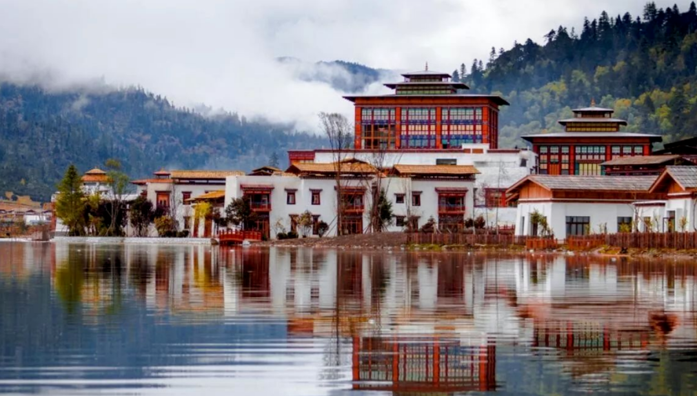
鲁朗湖畔与林海的区域实景参考；用于比较湖边短走与林海观景，非色季拉山口的指定站位。来源：林芝市文旅局。
鲁朗的湖畔与牧场位置可参考官方景区介绍。上午若已用足观山窗口，下午就只完成转场，不同时安排三项。
风景拍摄与机位
| 拍摄亮点 | 机位怎么找与站位 | 镜头与构图 | 光线与滤镜 |
|---|---|---|---|
| 南迦巴瓦主峰、云带与山尖 | 索松村住宿观景区先架好相机，选前景干净的一侧；日出前约30分钟到位，等云隙，不频繁换平台 | 70–300的150–300mm拍山尖与雪纹；先用70–100mm保留整座峰，避免截断山脚 | 晨间以见峰和层次为目标；金色日落需另留住宿窗口。f/5.6–f/8、1/500秒起，长端风大提高到1/1000秒；不用ND |
| 河谷、村舍与雪峰的三层关系 | 索松村允许通行的村道边，找屋顶、树木或田埂作近景；不进入田地找低机位 | 16–50的23–35mm；近景放下三分之一，峰顶留空间 | 明暗差大时保雪峰高光，RAW提亮村落；不要用GND把山峰压黑 |
| 鲁朗林海、牧场与扎塘鲁措 | 导航“鲁朗林海观景台”或“扎塘鲁措”；实际经过且允许停车时选一处，湖边沿开放步道找树木与水面交界 | 林海用70–150mm压缩山脊；湖边用16–35mm拍倒影和木栈道 | 林海适合侧光；湖面平静时先拍无CPL的倒影，再轻转CPL比较。大面积蓝天的广角画面不要把偏振拧到最深 |
D3 · 12月26日｜鲁朗 → 波密
鲁朗 → 通麦 → 古乡湖 → 波密｜住：波密｜节奏：沿途慢停。 通麦以交通经由为主；嘎朗湖或岗云杉林须替换部分晨游与湖泊停靠。
| 时段 | 当天安排 |
|---|---|
| 上午 | 在鲁朗附近开放的村道或林间路段短走；遇积雪、结冰或管制则直接启程 |
| 中午与下午 | 往波密方向，古乡湖作为主要短停；若选择岗云杉林，就减少鲁朗晨游与其他湖泊停靠 |
| 傍晚与晚上 | 白昼内抵达波密，入住、用餐、补给，并确认次日然乌方向的道路与住宿 |
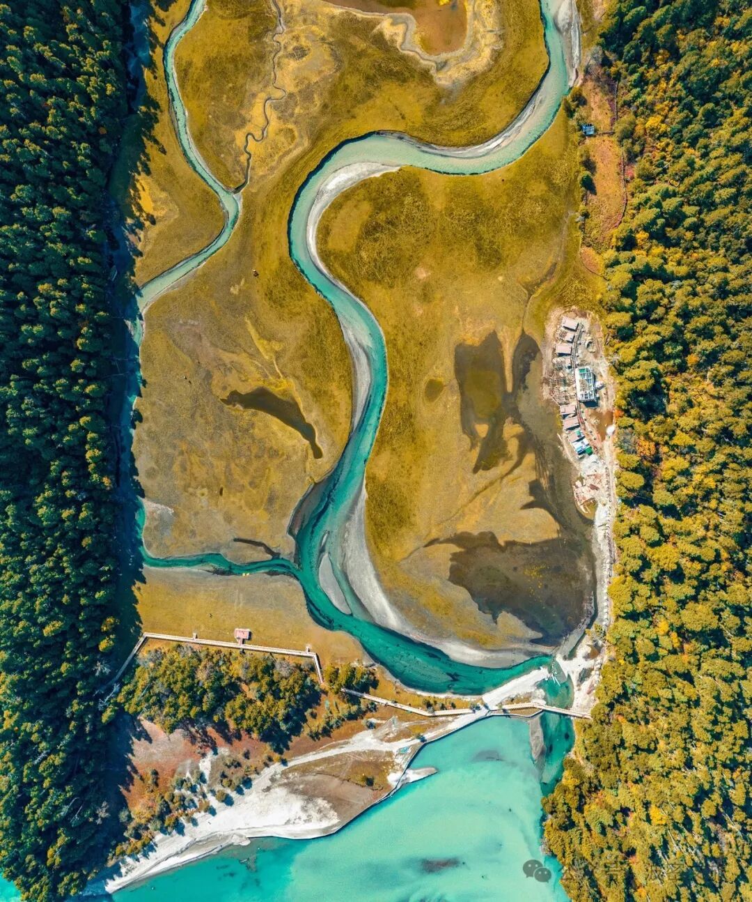
岗云杉林草湖水系的秋季俯瞰，仅作景观布局参考；冬季植被、水位及地面视角不同。来源：林芝市文旅局。
可选停靠与徒步
| 选择 | 建议预留 | 替换关系 |
|---|---|---|
| 扎西岗村与鲁朗牧场开放路段 | 45至90分钟 | 上午选一段折返；不叠加完整岗云杉林徒步 |
| 古乡湖公共观景处 | 20至40分钟 | 主线短停即可，湖岸与冰面分开处理 |
| 嘎朗湖与村落 | 30至60分钟，另核绕行车程 | 与古乡湖深度停留或森林徒步择一 |
| 岗云杉林：巴卡村方向至草湖折返 | 历史资料约2至3小时，接驳另计 | 只有司机确认白昼和接送余量时启用；替换鲁朗晨间慢游及其他湖泊停靠 |
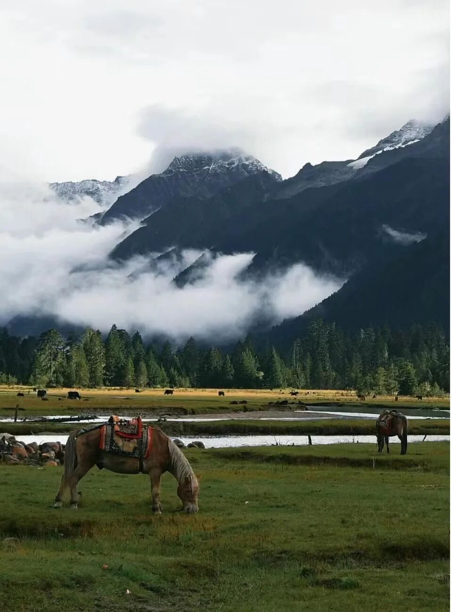
鲁朗牧场与木栅栏。非冬季区域参考；不代表扎西岗某户门口或核定徒步入口。可用23至35mm安排栅栏、牧场与远山；前景杂乱时退远，用70至100mm收紧木屋与山体。这是构图建议，不是原图EXIF。来源：林芝市旅发局。
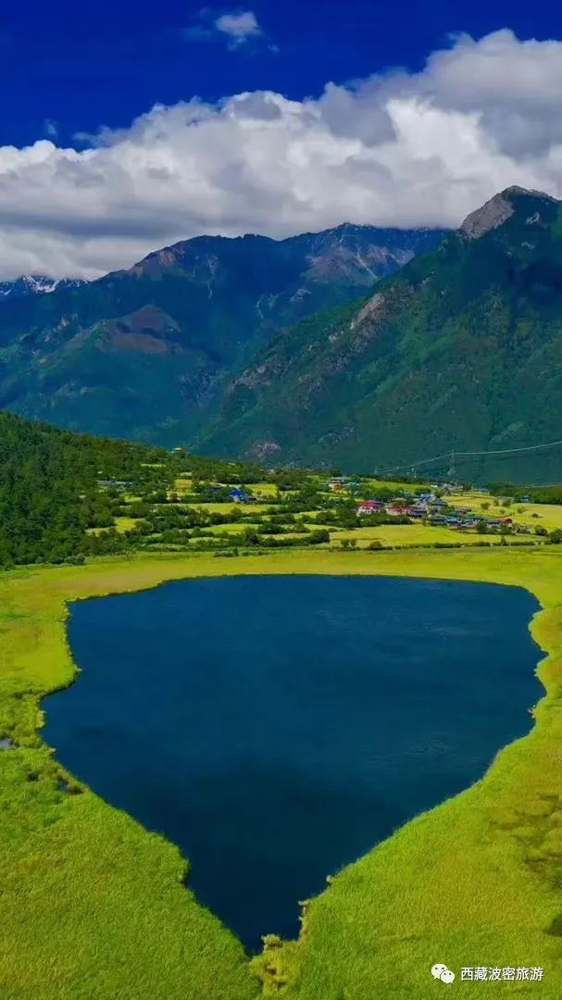
嘎朗湖与村落田野。非冬季高位照片，用于看湖泊与村落的布局；冬季没有图中同样的绿色。 来源：波密县文旅局，经林芝市文旅局发布。
风景拍摄与机位
| 拍摄亮点 | 机位怎么找与站位 | 镜头与构图 | 光线与滤镜 |
|---|---|---|---|
| 扎西岗村木屋与鲁朗牧场 | 导航“扎西岗村”，在允许通行的村道边找木栅栏指向远山的角度；不进院落或牧场围栏内 | 23–35mm拍村落，70–150mm把木屋与雪山压在一起 | 清晨或下午侧光；阴天拍木墙、树干和炊烟，CPL只轻减屋顶与草地反光 |
| 古乡湖湖湾与雪山 | 导航“古乡湖”，在景区允许观景区或有明确停车位的岸边找前景；沿岸横向移动，避开电线和路牌 | 16–35mm拍湖湾与倒影；70–200mm取小岛、岸线和山体局部 | 风小时先抢倒影；有风改拍湖色、岸线。想保倒影就卸CPL，想看水下石头再使用 |
| 嘎朗湖的村落与水草 | 导航“嘎朗湖”，站在允许到达的湖岸，以水草作近景、村落与山作背景；与古乡湖深度拍摄择一 | 23–50mm，比16mm更容易去掉杂乱岸边；70–150mm拍村舍层次 | 冬季以褐色草线和山形为主，不追求夏季绿色；CPL对比试拍 |
| 岗云杉林步道与草湖 | 巴卡村方向入口核准后，沿允许步道向草湖折返；只在桥、步道转弯或允许临水处停 | 23–50mm用步道和溪流引导；70–150mm拍平行树干 | 阴天更适合林下；f/5.6、1/125–1/250秒起，树动就加快。有脚架才考虑ND64拍约0.5–2秒流水 |
构图参考
以下用现有镜头给出构图建议，焦段不是原照片的EXIF。
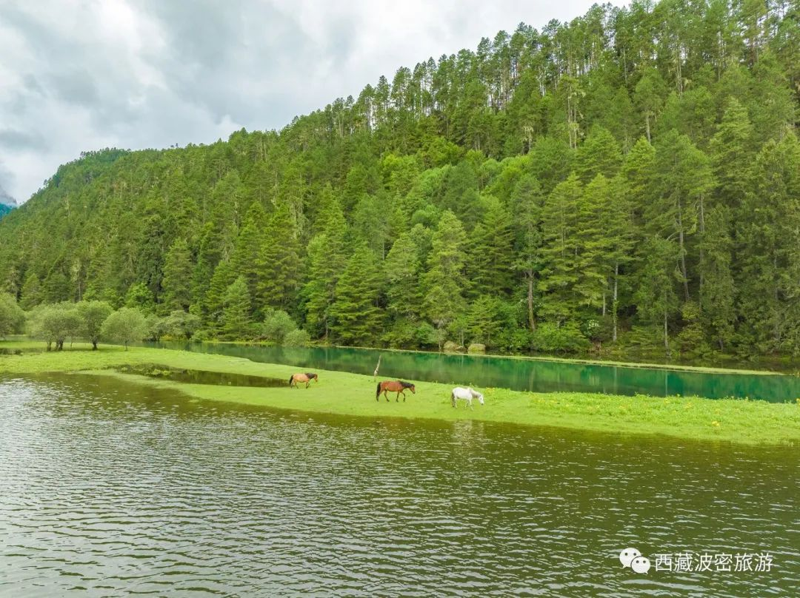
岗云杉林草湖：借鉴“水面—草岸—树林”的横向层次。可先试23至35mm、f/8，在允许的湖岸略蹲低、减少空天空。非冬季照片，不预设绿草或牲畜。来源：波密县文旅局，经林芝市文旅局发布。
第二程 湖泊与留白
一程看开阔，一程慢下来。 然乌看雪山与湖湾，巴松措留完整白天等风、看岛、逛村。D5先落实转场可行性，再决定然乌是否保留。
D4 · 12月27日｜波密 → 然乌
路线 波密 → G318东行 → 然乌镇 → 允许进入的湖岸观景处。住 然乌 · 强度 中高。来古仅正式复开且范围明确后启用，替换部分湖区活动。
| 时段 | 安排 |
|---|---|
| 上午 | 早餐后前往然乌方向；到湖区后先用餐，再选司机确认可以到达的公共观景点，安排一段短走或摄影。 |
| 下午默认安排 | 来古未确认复开时，以然乌湖和周边允许进入的观景区域为主，不前往冰川入口碰运气，也不安排冰上活动。 |
| 条件分支 | 若取得正式复开信息，先核实当天允许游览的具体区域、接驳与最晚返回时间，再决定是否替换部分湖区活动；不将冰洞或贴近冰体写成默认体验。 |
| 晚上 | 住然乌，优先落实供暖、热水和晚餐。睡前确认D5出发时间、沿途用餐点和途中改住的判断条件。 |
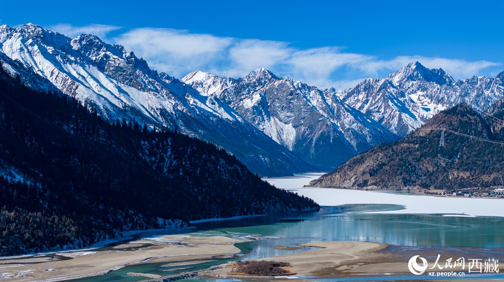
然乌湖冬日雪山与开阔湖面，历史实景参考；湖岸短走以当地确认的允许区域为准。来源：人民网西藏频道，经中国藏族网通转载。
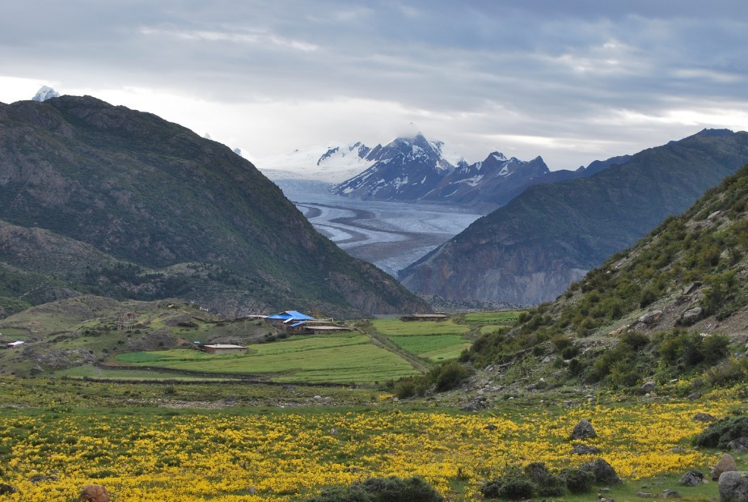
来古冰川谷地与冰舌。非冬季实景；保留条件项，不代表景区已恢复开放。 摄影：Jiangmy；CC BY-SA 3.0 · 图片来源。

可选停靠与短走
| 选择 | 建议预留 | 怎样取舍 |
|---|---|---|
| 然乌镇附近允许进入的湖岸或公共观景处 | 30至60分钟 | 先选一处站稳拍好，不为不同“上湖、下湖”名字追遍全湖 |
| 另一处司机确认开放的湖湾观景点 | 15至30分钟，交通另计 | 仅在午后还有白昼时增加；来古启用时取消这一项 |
| 湖岸短线折返 | 30至60分钟 | 沿允许的岸上路径走，以当地确认的折返点结束 |
风景拍摄与机位
| 拍摄亮点 | 机位怎么找与站位 | 镜头与构图 | 光线与滤镜 |
|---|---|---|---|
| 然乌湖雪山倒影 | 导航“然乌湖”，由司机落实然乌镇附近当天允许到达的公共观景处；站在岸上，找能同时容纳峰顶和倒影的开口 | 16–35mm横构图；真正对称时地平线可居中，无倒影时减少天空 | 抵达后若风小先拍，别把倒影留到“更好的光”；CPL旋转会削弱倒影，先拍不装滤镜的一张 |
| 湖湾弧线、湖水色带与岸边纹理 | 同一停车点沿岸上允许路径小幅换角度，用弯岸把视线引向雪山；不追着“上湖、下湖”名称绕全湖 | 70–300的100–250mm拍色块与岸线；f/8、约1/500秒起 | 侧光更能显出山体纹理；CPL可轻减反光，若湖色已饱和就不用 |
| 来古冰舌与村落 | 仅正式复开且区域明确后，从景区指定观景点拍冰舌与谷地；由当地确认能否到达，不自行找冰洞机位 | 70–200mm拍冰川层叠，23–35mm带入谷地与村落尺度 | 不为冰川长曝光常备ND；白雪高光优先，站岸上也能拍，不以下冰面为前提 |
D5 · 12月28日｜然乌 → 巴松措，转场日
路线 然乌 → 波密 → 古乡湖方向 → 通麦 → 鲁朗 → 色季拉 → 林芝市区方向 → 巴松措。计划住 巴松措 · 强度 高。只安排必要的用餐、休息与补给；古乡湖与既定休息合并，不逐站游览。
| 时段 | 安排 |
|---|---|
| 出发前 | 由司机结合最新路况、冬季白昼、检查、用餐及休息时间确认能否当天抵达。早点出发不等于允许摸黑赶冰雪路。 |
| 白天 | 以转场为唯一核心，只安排必要的用餐、休息和安全停车；不再加森林徒步、冰川或新的村落支线。提前联系巴松措住宿，确认入园和晚到接待方式。 |
| 顺利抵达后 | 先入住和晚餐；若天色、体力允许，在住宿附近看一眼湖面即可，把正式游览留到D6。 |
D5是整条11天线最需要司机确认的一天。 今天不加徒步，新措留给D6。若无法在安全条件下完成，应在司机确认的沿途地点改住，D6再前往巴松措；代价是失去原定的完整湖边休闲日。若要同时保住“巴松措两晚＋完整白天”，应提前缩减然乌支线或调整总天数。
可选停靠与短走
| 选择 | 建议预留 | 触发条件 |
|---|---|---|
| 古乡湖等既定休息点补拍 | 10至15分钟 | 只与用餐、休息合并，不因拍照增加新的绕行 |
| 巴松措住宿附近湖岸 | 10至20分钟 | 顺利入住且仍有白昼；晚到就取消 |
风景拍摄与机位
| 拍摄亮点 | 机位怎么找与站位 | 镜头与构图 | 光线与滤镜 |
|---|---|---|---|
| 古乡湖补一张不同画面 | 只在既定休息停车点补拍；若D3拍过全景，今天取局部，不另绕湖找点 | 70–200mm截取湖湾、雪线与树丛 | 天阴拍色块和纹理；不用ND，以短停完成 |
| 转场中的公路与山谷 | 仅在司机确定可停车的位置，站在停车区内向道路弯曲方向拍；不去行车道中央 | 24–50mm让公路从角落入画；车窗抓拍约1/1000秒 | 玻璃反光明显时改角度，先卸CPL |
| 巴松措住宿附近暮色 | 顺利入住且仍有白昼时，在酒店允许到达的湖岸拍；晚到直接留到D6 | 16–35mm拍湖面与山影；70–150mm取最后一束山光 | 手持先保快门；有脚架可ISO125、f/8，让快门随光线变慢，通常无需ND |
D6 · 12月29日｜巴松措，整天慢游
轻松版 湖心岛 → 开放湖滨步道 → 午间休息 → 结巴村村道与湖边。徒步替换版 桑通草场接驳 → 新措允许路径折返，按一整天预留。两版择一 · 住 巴松措第二晚 · 强度 低，徒步则中。
| 时段 | 安排 |
|---|---|
| 上午慢游 | 早餐后先看湖心岛、开放的湖滨步道与观景区域，留出坐下来休息和拍照的时间。湖边短走是主安排，不以完整环湖为目标。 |
| 中午与下午 | 回住宿或附近用餐，下午在湖边、村落与休息之间自由组合；想拍倒影就找一处允许停留的湖岸，等风小些再拍，不必沿湖追着跑。 |
| 想走新措时 | 必须另行确认进出道路、接驳、允许线路和折返点，并用它替换当天大部分慢游内容。林芝文旅介绍的新措需先乘车到桑通草场再徒步，不能当成巴松措湖边顺手增加的一小段；该介绍为历史路线资料，不代表本次冬季已开放。官方路线介绍 |
| 晚上 | 连住不换酒店，收拾次日转场行李；向拉萨酒店确认到店时间、停车与房间供暖。 |
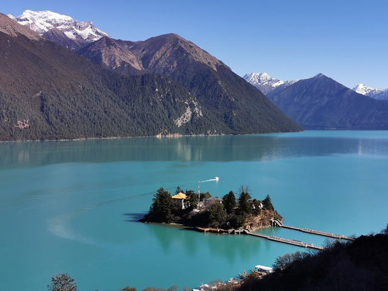
巴松措湖心岛与雪山。D6留给湖畔等光、散步和休息；照片是区域景观参考，不定位结巴村入口，也不代表已选酒店门前视角。摄影与来源：悠然见五山，携程游记。
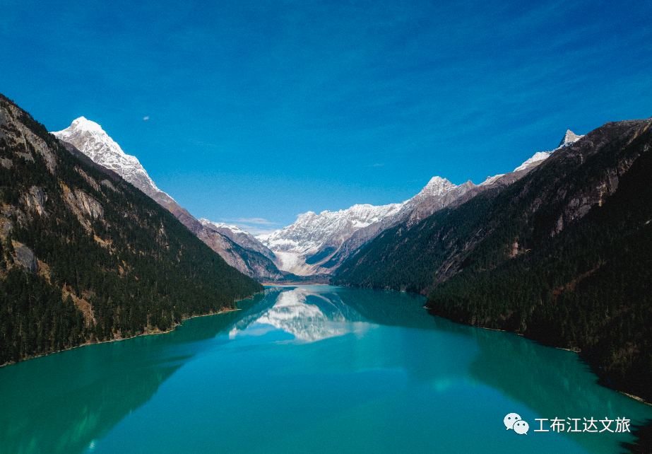
新措湖泊与雪山，景观参考，不代表本次冬季已开放；从桑通草场沿核准路径到允许湖岸，照片不能作为线路图。来源：工布江达文旅，经林芝市文旅局发布。
可选停靠与徒步
| 选择 | 建议预留 | 替换关系 |
|---|---|---|
| 湖心岛与开放的湖滨步道 | 60至90分钟 | 作为轻松版的核心，具体区域依现场安排 |
| 结巴村村道与湖边 | 45至60分钟，接驳另计 | 与长时间观景台停留择一，村落不等于可以进入农田 |
| 新措：桑通草场至湖边原路折返 | 连同车辆进出按一整天预留 | 替换当天大部分巴松措慢游；不在完成湖岛、村落后临时追加 |
历史路线资料给出的步行单程约3公里、约1小时；车辆单程参考约1.5小时，沿途停留会更久。冬季需向导按积雪、车辆和折返点重算，不能直接照搬这组时间。想轻松就留在巴松措，想徒步则出发前确定新措这一项。结巴村位置参考。
风景拍摄与机位
| 拍摄亮点 | 机位怎么找与站位 | 镜头与构图 | 光线与滤镜 |
|---|---|---|---|
| 巴松措湖心岛、桥与雪山 | 导航“巴松措湖心岛”，在浮桥入口附近允许停留的岸上先找正面；再沿湖滨步道改变桥的入画方向 | 16–35mm拍桥引导到小岛；35–50mm减少前景杂物；70–150mm取岛上建筑与背后雪山 | 早些到先看风，不保证一定有倒影；拍倒影少用CPL，拍透水色时再转动比较 |
| 结巴村木屋与湖面 | 导航“结巴村”，从村内允许通行的道路、临湖步道找木屋或木栅栏作前景；不进住户院子 | 23–35mm交代村湖关系；70–150mm压缩屋顶、湖面和山体 | 侧光拍木屋，阴天拍门窗；不要把滤镜旋到湖面完全没有亮点 |
| 新措林间通向湖面的开口 | 仅启用新措整日支线时，从桑通草场沿核准路径走到允许湖岸；先拍湖口，再在返程拍林间溪流 | 16–24mm留树干框景；35–50mm收紧湖湾；70–200mm拍远山局部 | 阴天适合森林，短暂晴光留给湖面。CPL轻减叶片与溪流反光；ND64只在有脚架且不耽误折返时使用 |
第三程 拉萨与山南
把镜头从雪山转向街巷与寺院。 D8是唯一完整拉萨日，D9看桑耶，D10看雍布拉康与昌珠寺后返回。想多留一天拉萨，就用泽当支线的时间调整。
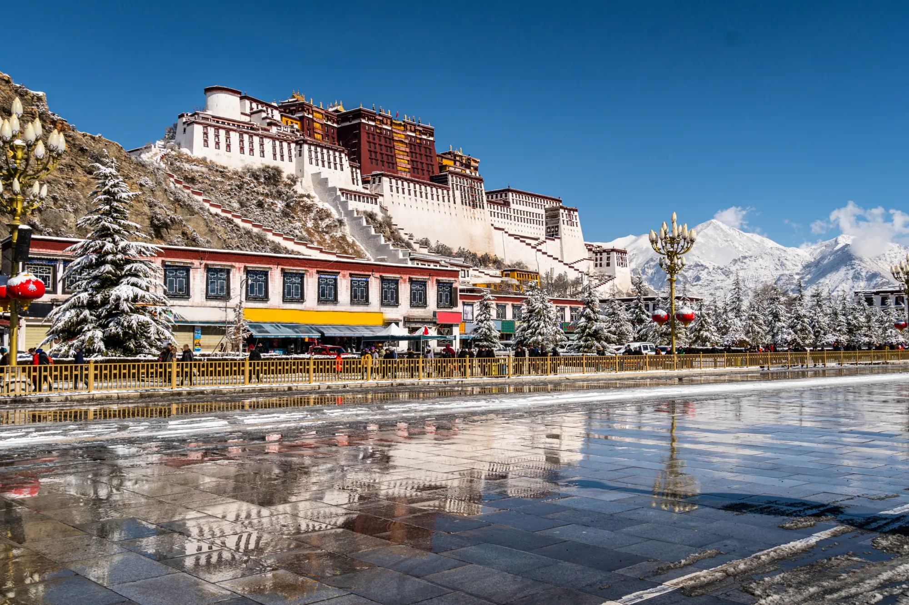
雪后的布达拉宫。冬日景观参考，行程不以遇到降雪为前提。图片来源：Tours Chanteclerc。
D7 · 12月30日｜巴松措 → 拉萨
路线 巴松措 → 工布江达方向 → 米拉山隧道沿线 → 拉萨。住 拉萨 · 强度 中。秀巴古堡仅实际出园路线顺路时加入，替换抵达后散步；宗角禄康与八廓街短走择一。
| 时段 | 安排 |
|---|---|
| 上午 | 早餐、退房后启程；若前一天已好好看湖，就不再为补拍增加长时间停留。 |
| 下午 | 抵达拉萨后先入住、吃饭和休息。体力合适可在住宿附近短走，布达拉宫广场外观或八廓街周边二选一，不把它算作完整游览日。 |
| 晚上 | 核对D8布达拉宫预约时段、大昭寺入场安排、证件和市内交通；早点休息，为次日集中参观留体力。 |
| 住宿侧重 | 优先交通方便、供暖可靠和夜间安静；住宿区域确定后再安排取送点，不先承诺具体车程。 |
可选停靠与短走
| 选择 | 建议预留 | 怎样取舍 |
|---|---|---|
| 秀巴古堡外观与允许开放的参观区 | 30至45分钟，绕行另计 | 仅当司机确认实际出园路线顺路；替换抵达拉萨后的散步 |
| 宗角禄康公园 | 30至60分钟 | 到拉萨尚早、入住后有体力时选；与八廓街初逛二选一 |
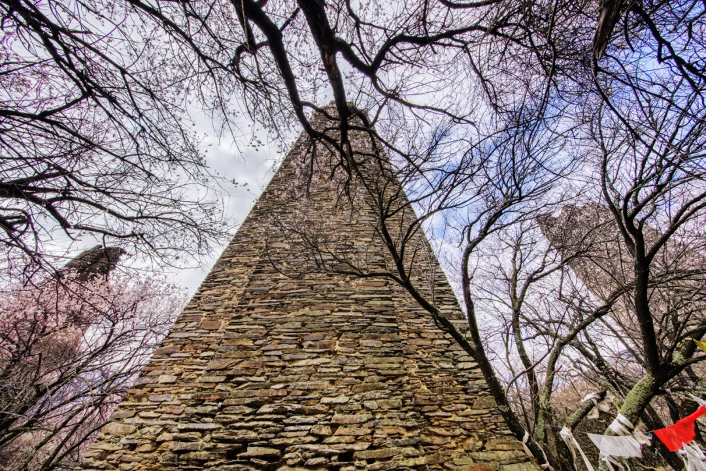
秀巴古堡石塔。可从允许参观区看石塔与林木，画面不代表每座塔都可攀登。 来源：林芝市文旅局发布。
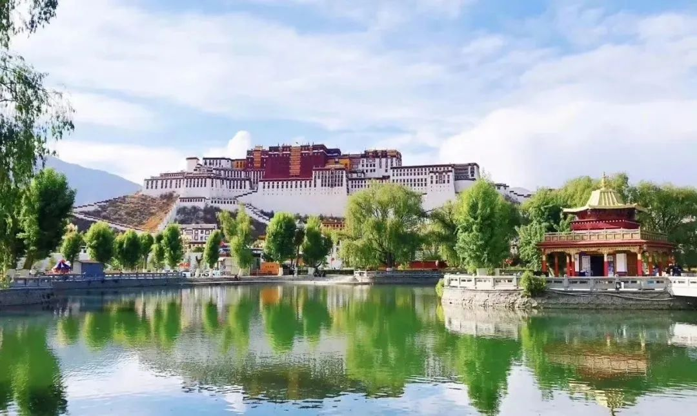
宗角禄康公园的湖面与布宫背面。非冬季实景；冬季柳叶和水面状态不同。 来源：拉萨旅游发展局，经西藏文旅发布。
风景拍摄与机位
| 拍摄亮点 | 机位怎么找与站位 | 镜头与构图 | 光线与滤镜 |
|---|---|---|---|
| 秀巴古堡石塔群与坡地 | 导航“秀巴古堡”，在景区允许步行区先退远看塔群关系，再沿开放路径找塔身错落；以实际出园路线顺路为前提 | 23–35mm拍塔群，70–150mm突出石塔和背后山坡；不要只贴着塔脚仰拍 | 侧光显石材纹理；f/8、1/250秒起，无需ND或GND |
| 宗角禄康的布达拉宫背面与湖岸 | 导航“宗角禄康公园”，在布宫北侧湖岸找柳枝与宫殿同框的位置；沿步道小幅换角度 | 16–35mm带湖面，70–150mm拍白墙、红宫与枝条 | 湖面未冻且风小时才有完整倒影；先不装CPL。冬季无倒影就用枯枝作画框 |
| 布宫正面蓝调 | 若入住后还有体力，导航“布达拉宫广场”，从正面开阔区拍；机位与D8药王山择一，不当晚全跑 | 23–50mm拍完整宫殿；手持约1/125秒、Auto ISO，脚架可低ISO慢门 | 日落后天空仍有蓝色时拍灯光；夜景卸CPL和ND，三脚架架设依现场规定 |
D8 · 12月31日｜布达拉宫、大昭寺与八廓街
顺序随预约调整 布达拉宫 → 午餐休息 → 大昭寺 → 八廓街与茶馆。药王山可与布宫外观合并，宗角禄康择需加入；南山需用半天替换大昭寺及部分街区活动。住 拉萨 · 强度 低，仍有台阶与步行。
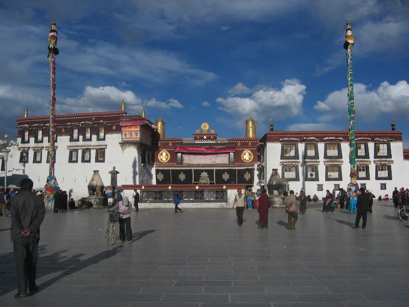
大昭寺正面与广场。建筑外观参考。 摄影：onwardtibet.org；CC BY-SA 2.0 · 图片来源。

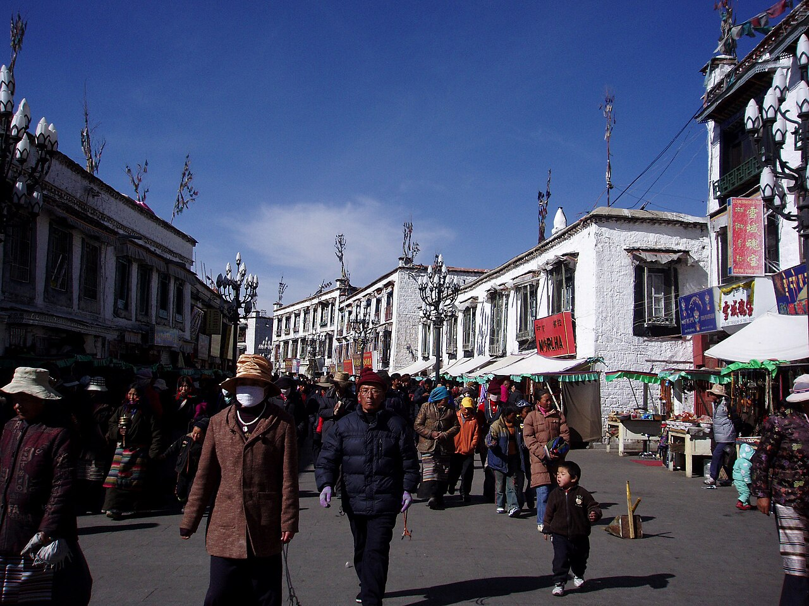

| 时段 | 安排 |
|---|---|
| 上午 | 以布达拉宫预约为当天的时间基准，预留交通、安检和上行步道的余量；参观前后不再安排另一项需要长距离行走的活动。 |
| 中午 | 坐下来用餐、休息，再决定下午保留几项。大昭寺入内参观与八廓街街区漫步要分开安排。 |
| 下午 | 按开放与预约参观大昭寺；剩余时间逛八廓街，给茶馆、街巷和建筑细节留时间。若布宫排在下午，市内游览顺序对调。 |
| 傍晚与晚上 | 选一顿轻松的跨年晚餐；有余力再看宫殿外观夜景。烟花、灯光或跨年活动均未确认，不列入固定安排。 |
这版只有一个完整拉萨日。 布宫、大昭寺和八廓街可按预约串联，但不保证每处都深度游览；若希望两整天慢逛，可把D9至D10泽当支线改成拉萨游览与机动日。12月31日为周四；布宫冬季时段及周一闭馆规则见官方公告。
可选停靠与徒步
| 选择 | 建议预留 | 替换关系 |
|---|---|---|
| 药王山观景台 | 20至30分钟 | 与布宫外观拍摄合并，不再额外跑多个相似机位 |
| 宗角禄康公园 | 30至60分钟 | 若D7没去，可替换部分八廓街闲逛 |
| 南山公园开放登山步道折返 | 连交通按半天预留，有连续上坡 | 必须替换大昭寺及部分街区活动，或另增加拉萨日；不在三大核心游览之后追加 |
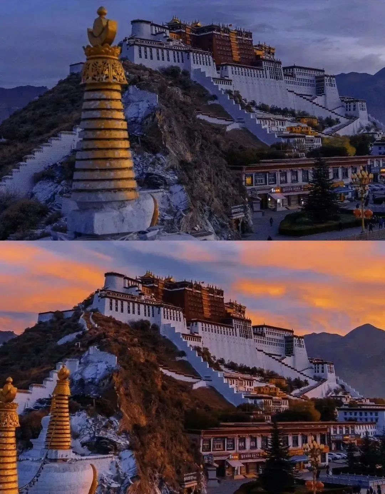
药王山观景台的布宫角度。展示经典正侧面构图及晨昏光线，不承诺当日同样灯光与云色。 来源：摄图网，经西藏文旅发布。
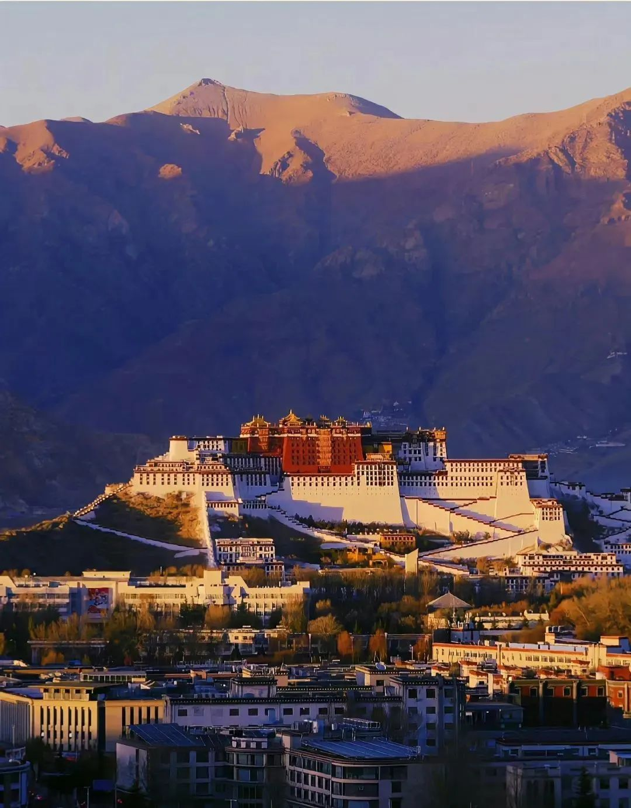
南山方向远看布达拉宫。长焦远眺实景参考，不表示必须登顶或可在清场后拍摄。 来源：RIckey向前走，经西藏文旅发布。
官方摄影点介绍可作位置参考。南山实行分段上行与清场管控：现行公告列出的冬季整体开放为9:00至19:00，但不同平台更早停止上行、清场；应按所走路段确认，不能把19:00理解为可以一直登高。2026年管理公告。
风景拍摄与机位
| 拍摄亮点 | 机位怎么找与站位 | 镜头与构图 | 光线与滤镜 |
|---|---|---|---|
| 50元人民币角度的布达拉宫 | 导航“药王山观景台”，进入允许的平台后先用较短焦段对准宫殿，再收紧；以现场开放为准 | 16–50的35–50mm拍经典全景；70–150mm拍红宫与白墙层叠 | 清晨侧光和蓝调均可；白天f/8，白墙看高光警告。CPL不是必需品 |
| 从城市尺度看布宫 | 若选南山半天替换，导航“南山公园”，先在园内低处与湖边找前景，再按体力选择允许步道的观景平台；不以登顶为目标 | 70–300的100–200mm为主，把城市与宫殿压缩；16–35mm拍湖景 | 天气清透、侧光时更好；长焦约1/500–1/1000秒，薄雾重时不靠CPL“去雾” |
| 大昭寺正门与八廓街生活 | 导航“大昭寺广场”，在不挡礼拜和通行的位置拍正门；再沿八廓街找斜光照到的白墙、窗框和街角 | 23–35mm拍环境，35–50mm拍建筑细节；人物先取得同意，避免远距离窥拍 | 日间以f/5.6、约1/250秒起；人走动提高到1/500秒。CPL通常收起，减轻换镜负担 |
| 布宫与车流的长焦叠层 | 额外机位仅在时间充足时选“八廓街商城天桥”，即林廓东路北段与北京东路交汇附近的过街天桥；先确认可安全通行和停留 | 70–200mm竖构图让道路引向布宫；不在狭窄通道架脚架 | 白天快门凝住车流；想拍车轨须有安全且允许架设脚架的位置，蓝调通常不需要ND |
D9 · 1月1日｜拉萨 → 桑耶寺 → 泽当
路线 拉萨 → 雅鲁藏布江河谷 → 桑耶寺 → 桑耶镇外街 → 泽当。住 泽当 · 强度 中。桑耶为唯一核心参观点，顺路江景只选一处合法停车点，不加高山湖泊。
| 时段 | 安排 |
|---|---|
| 上午 | 早餐后前往桑耶寺，冬季不必为多塞一站过早赶路；出发前确认当天入场安排和途中用餐。 |
| 中午与下午 | 把桑耶寺作为当日唯一核心参观点，可预留约1.5至2小时作为游览目标，结合讲解看庭院、建筑与允许参观的殿堂；具体范围以现场为准。 |
| 傍晚 | 前往泽当入住，有余力再在住宿周边散步；当天不额外加高山湖泊或库拉岗日方向。 |
| 要落实 | 若假期开放、道路或身体状态不适合执行，则保留拉萨作为替代，提前联系可取消的泽当住宿。 |
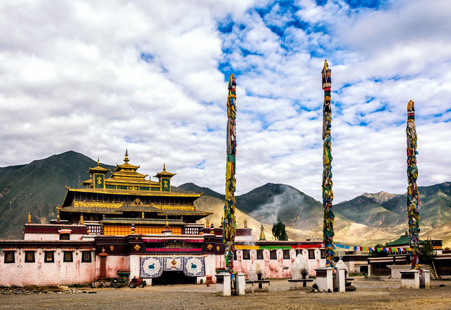
桑耶寺庭院与金顶，景观参考。图片来源：Tibet Discovery。

可选停靠与短走
| 选择 | 建议预留 | 放进当天的方式 |
|---|---|---|
| 桑耶镇、寺院外侧允许步行的街巷 | 30至45分钟 | 参观后短走，替换重复殿堂停留或泽当闲逛 |
| 雅鲁藏布江沿线合法公共观景停车点 | 10至20分钟 | 仅选司机确认顺路且可停车的一处，不临时寻找江边野路 |
今天以寺院建筑和河谷为主，未设置山地徒步。若选择白玛林措支线，D9将按下方整套改线方案执行，原来的桑耶—泽当安排不同时保留。
风景拍摄与机位
| 拍摄亮点 | 机位怎么找与站位 | 镜头与构图 | 光线与滤镜 |
|---|---|---|---|
| 桑耶寺主殿、庭院与白塔 | 导航“桑耶寺”，入内先在允许摄影的主殿前庭院拍对称，再从开放环路取白塔和主殿的错落关系 | 16–24mm拍庭院，35–50mm拍门框与殿面，70–150mm取金顶与远山 | 朝向与现场阳光决定顺序；f/5.6–f/8，机身保持水平。金顶反光用曝光控制，不能指望CPL消掉金属反光 |
| 桑耶镇外街与院墙 | 从寺院出口沿允许通行的街巷短走，用转角和墙面影子组织画面，不进入院门内 | 23–50mm；避免用16mm贴近建筑造成明显倾斜 | 侧光最容易拍出墙面纹理；阴天拍窗框和门饰，通常不装滤镜 |
| 雅鲁藏布江河谷层次 | 只在司机落实的沿途公共停车观景点拍；选择沙洲、江湾与远山叠层，具体停车点随实际路线确定 | 70–200mm取江湾和山脊，23–35mm交代河谷；不为找高点爬坡 | 有侧光时拍层次；CPL轻减水面反光，避免湖河表面过暗。无必要长曝光 |
D10 · 1月2日｜雍布拉康、昌珠寺 → 拉萨
路线 泽当 → 雍布拉康山脚与允许参观区 → 昌珠寺 → 用餐 → 拉萨。住 拉萨 · 强度 中。两寺之间不另加远途景点；先在山脚看宫堡与田野，再按体力决定上行。
| 时段 | 安排 |
|---|---|
| 上午 | 先去雍布拉康，留时间缓步上行、看山顶建筑和河谷；若台阶结冰或身体状态不合适，缩为允许区域的外观观景。 |
| 中午 | 参观昌珠寺并用餐。若想看珍珠唐卡，先问清当日能否参观、具体安排和额外费用，不把它当作必然包含的项目。两处可串联，景观与参观点可参考山南文旅的雍布拉康介绍和昌珠景区介绍。 |
| 下午 | 按司机根据白昼与路况确定的时间返拉萨；若上午耽搁，缩短第二站，不把返程拖成赶夜路。 |
| 晚上 | 回到拉萨整理行李，核对航班状态、机场、接送时间与证件。返程前一晚住拉萨。 |
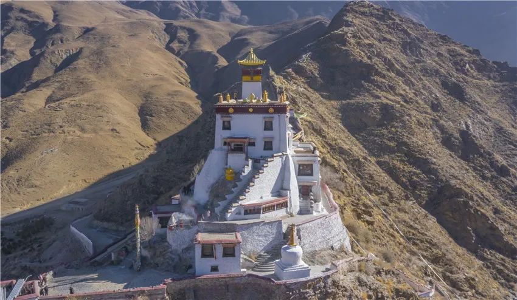
雍布拉康依山而建的轮廓，景观参考。来源：山南市文旅局。
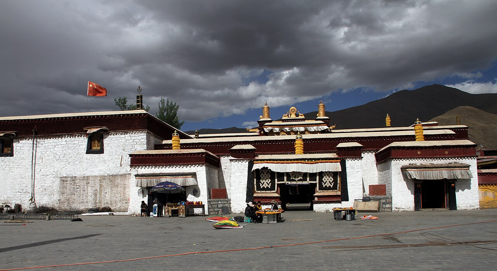
昌珠寺院门与广场。摄影：Gerd Eichmann；CC BY-SA 4.0 · 图片来源。

可选停靠与短走
| 选择 | 建议预留 | 怎样取舍 |
|---|---|---|
| 雍布拉康山脚萨日索当周边的公共道路观景 | 15至30分钟 | 看宫堡与田野的关系，不进入耕地或未开放区域 |
| 昌珠寺外侧与村落允许通行路段 | 15至30分钟 | 参观后顺接；若已接近返拉萨时间则取消 |
登雍布拉康本身已有台阶上行，当天不再叠加另一条山地徒步。山脚景观与位置参考。要走库拉岗日时，D10应留给完整返回拉萨的交通日，见下方改线表。
风景拍摄与机位
| 拍摄亮点 | 机位怎么找与站位 | 镜头与构图 | 光线与滤镜 |
|---|---|---|---|
| 雍布拉康完整山脊轮廓 | 导航“雍布拉康”，先在山脚停车区及允许通行的公共道路找宫堡与整条山脊同框的角度，再决定上行 | 70–150mm拍完整山脊，150–250mm拍宫堡轮廓；先退远再拉近 | 侧光显台阶、石墙和山形；f/8、长焦约1/500秒。CPL可轻用，但天空别压得比建筑还黑 |
| 宫堡与萨日索当田野 | 山脚公共道路上看田野线条指向宫堡；上行只在开放平台拍河谷，不能把远处农田当作可进入机位 | 23–35mm拍田野引导线，70–200mm压缩田块与村庄 | 冬季以褐色、影子和线条为主；不需要GND |
| 昌珠寺院门、院墙与转角 | 导航“昌珠寺”，先在院门外广场拍入口，获准摄影后再取庭院或门框；周边短走就在公共道路完成 | 23–35mm拍门院，35–50mm拍门饰；珍珠唐卡不预设允许摄影 | 日间f/5.6–f/8、约1/250秒；寺院内部先看禁拍规定，低光卸掉CPL，不使用闪光灯 |
D11 · 1月3日｜拉萨返程
路线 拉萨酒店 → 已确认的机场接送路线 → 贡嘎机场 → 实际回程目的地。强度 低。早班机直接去机场；晚班机且酒店就在附近时，可在宗角禄康或八廓街择一短走后取行李。
| 时段 | 安排 |
|---|---|
| 上午或起飞前 | 按机票上的起飞时间倒推退房、接机与机场办理手续的时间；具体提前量由航司要求及当日道路决定。 |
| 当天安排 | 以顺利返程为核心，不再安排郊区景点；若是晚班机，可在酒店附近短走，并保持行李与接送衔接方便。 |
| 若航班变化 | 先处理航司改签、当晚住宿和接送调整，再考虑补玩。跨年假期的机票、酒店与包车取消条件应在预订时确认。 |
可选停靠与短走
| 选择 | 建议预留 | 启用条件 |
|---|---|---|
| 宗角禄康或八廓街附近补走一小段 | 20至40分钟 | 仅限晚班机、住宿本就在附近，并已留足退房、接送与机场时间；两处择一 |
返程日不安排徒步或跨城支线；早班机直接去机场。
风景拍摄与机位
| 拍摄亮点 | 机位怎么找与站位 | 镜头与构图 | 光线与滤镜 |
|---|---|---|---|
| 旅程结尾的城市清晨 | 仅晚班机且住宿就在附近时，在宗角禄康或八廓街择一短走；早班机不另找点 | 16–50的23–50mm，一张街巷、一张门窗光影；70–300提前收好 | 卸下ND与CPL，带轻便组合；不为等光推迟接送 |
| 返程窗外雪峰 | 只在座位视角与云况合适时拍，镜头靠近但不接触窗玻璃 | 35–50mm，约1/1000秒、Auto ISO；用连拍挑一张清楚的 | 不指定未经核实的左右舷“必见机位”；不装CPL，避免窗玻璃偏振色斑 |
这版的取舍：保留巴松措两晚与一个完整白天、山南人文支线；代价是D5长途转场、仅一个完整拉萨日、没有独立天气缓冲日。若来古继续关闭，先判断然乌湖是否值得往返；若需要两个完整拉萨日，可取消泽当支线或增加总天数。最终选择仍待确定。
徒步与改线
短走看当天，徒步看替换，白玛林措看整套改线。 以下全部为未选定的可选项：先腾出所需时间，再确认出发日的开放、入口、接驳、积雪与向导。除注明的历史数据外，时长是行程预算，绕行车程另计。
| 支线 | 适合放在哪天 | 时间与强度 | 要替换什么 |
|---|---|---|---|
| 鲁朗牧场、扎西岗村短走 | D2较早抵达或D3上午，二选一 | 45至90分钟预算；选开放路段折返 | 替换多个观景台间的奔波，不再追加岗云杉林全段 |
| 岗云杉林草湖折返 | D3时间充足时；更从容的做法是取消然乌后用D4 | 官方历史资料约2至3小时步行，接驳另计；有冬季湿滑路面 | D3替换牧场与其他湖泊停靠，或D4替换然乌／来古东行。路线依据 |
| 新措原路折返 | D6 | 连同车辆进出占一整天；历史步行参考约6公里，冬季重算 | 替换巴松措完整慢游，不与湖岛、村落全部叠加。路线依据 |
| 拉萨南山开放步道折返 | D8改成登高日，或另留拉萨日 | 按半天预算，有明显上坡，不以登顶为目标 | 替换大昭寺与部分街区游览；按分段上行与清场时间返回。管理公告 |
| 白玛林措允许观景短线 | 使用下方三天模块 | 去程1天、活动1天、返程1天；高海拔山地活动 | 必须整套改线，不能只把一天徒步塞进泽当两天 |
白玛林措与库拉岗日｜完整三天模块
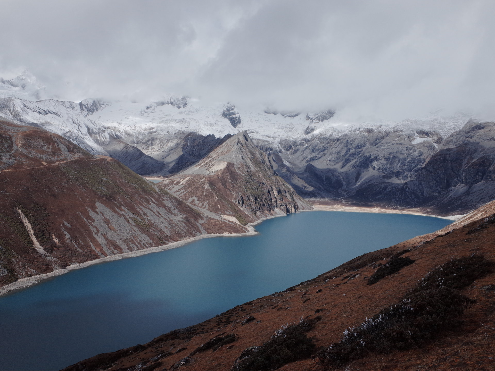
白玛林措山湖景观参考；实际从允许的观景点取景，不以照片中的高处机位作为徒步目标。图片来源：朱措白玛林湖图集。
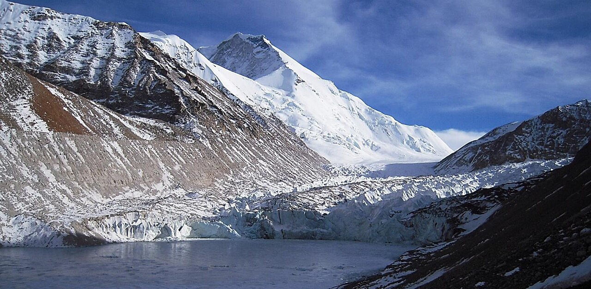
库拉岗日雪峰与冰川湖。北西侧历史远景，不对应本次默认徒步机位。 摄影：Kmrjr；CC BY-SA 4.0 · 图片来源。

这条支线的目的，是在允许范围内看雪山与湖泊，并选一段可折返的日间短线。 洛扎县2026年10月有白玛林措接待记录，但这不代表所有徒步线或圣诞期间均开放。官方接待记录。吉堆、白沙两条进山线路另有2025年暂闭公告，本次仍未找到明确复开材料；不把它们、介久措或折公三措列为默认线路。分线关闭公告。
方案A｜1月3日返程，取消然乌与泽当
D1至D3不变；取消然乌／来古东行与泽当两日支线，把巴松措和拉萨前移。 这样保留巴松措两晚、一个完整湖边日和一个完整拉萨日，再腾出三天往返库拉岗日。
| 日期 | 选择徒步支线后的安排 | 住宿 |
|---|---|---|
| D4 12月27日 | 波密 → 巴松措，完成西行转场 | 巴松措 |
| D5 12月28日 | 巴松措整日慢游；新措仍须择一替换 | 巴松措 |
| D6 12月29日 | 巴松措 → 拉萨 | 拉萨 |
| D7 12月30日 | 拉萨完整游览日，按布宫与大昭寺预约安排 | 拉萨 |
| D8 12月31日 | 拉萨 → 色乡／措玉村一带的实际住宿基地；羊湖、普莫雍措仅在道路允许且不赶路时少量停靠 | 已确认可接待的基地 |
| D9 1月1日 | 白玛林措允许区域观景与短线折返；如景区关闭，执行事先约定的基地休息或返程方案 | 同一基地 |
| D10 1月2日 | 专留返回拉萨的交通日，不兼做第二天徒步 | 拉萨 |
| D11 1月3日 | 拉萨返程 | — |
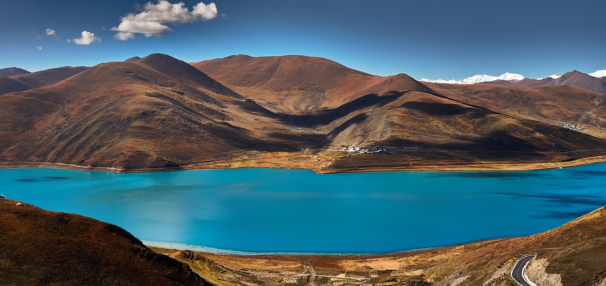

这版仍没有独立天气缓冲日，也没有第二个完整拉萨日。若更看重然乌湖与山南寺院，就保留原主线，徒步选岗云杉林或新措。
方案B｜1月5日返程，保留然乌与巴松措
12月24日至31日沿原主线完成D1至D8；1月1日去住宿基地、2日允许范围短走、3日专程返拉萨、4日拉萨游览或天气缓冲、5日返程。从12月24日出发计算，共13天12晚，并替换掉原泽当两日支线。1月4日只能按游览或缓冲择一使用；两天徒步则需把三天模块再增加一天。
支线摄影与向导落实
| 阶段 | 拍摄与落实重点 |
|---|---|
| 去程 | 仅在确认可停车的湖泊观景处停靠；16–35mm拍山湖，70–200mm拍岸线与雪峰，不为凑齐两个湖延误到基地。 |
| 活动日 | 行走时以16–50为主，到允许的固定观景点再用70–300拍山脊、冰雪纹理与湖面色带。大景从f/8试拍，长焦手持约1/500–1/1000秒，风大提高ISO。 |
| 返程 | 完整交通日，只在正常休息点补拍，不因前一天没见到峰而偏离返程道路。 |
| 出发前向导确认 | 实际起点、允许终点、距离、累计爬升、最晚折返时间；道路、接驳、供暖住宿及每人的证件要求。报价分别列明司机与徒步向导服务。 |
摄影与器材
现有组合：Fujifilm X-T5 ＋ 16–50 ＋ 70–300。 每天的具体机位在对应行程的“风景拍摄与机位”里展开；这里集中放参数起点、携带取舍和天气应对。
两支镜头，三种画面
下方焦段都指镜头标示的实际焦距；参数是试拍起点，不是固定答案。 16至50负责大景、道路、村落与建筑，70至300负责远山、山脊和湖面局部；先想拍什么，再决定换镜。
| 场景 | 可先尝试的设置 | 拍完先检查 |
|---|---|---|
| 白天湖泊、雪山大景 | 光圈优先f/5.6至f/8；手持尽量保持约1/250秒或更快，ISO随光线调整 | 雪峰与云层是否过曝，近处前景与主体是否清楚 |
| 远山和长焦局部 | 先从1/500秒起试，风大或用长端时提高到1/1000秒 | 放大看是否抖动，别只看缩略图锐不锐 |
| 阴天、森林与村落 | 先试f/5.6、1/125至1/250秒、Auto ISO；有运动再提高快门 | 树干是否有层次，画面边缘是否杂乱 |
| 傍晚城市、宫殿外观 | 手持用较大光圈与Auto ISO；有脚架且允许架设时再降低ISO尝试慢门 | 建筑亮部、灯光和天空是否保留细节；是否挡住通道 |
每天留三张：一张大景、一张有层次的中景、一张当天的细节。 尽量保留RAW，曝光看直方图与高光警告。寺院内、殿堂和人物近景先看规定并尊重对方意愿。
镜头与滤镜携带清单
这条路线优先带现有16–50与70–300。 16–50覆盖村落、寺院、森林与湖湾；70–300负责南迦巴瓦、雪峰纹理、湖面色块和布宫叠层。两支在X-T5上的视角约相当于全画幅24–75mm和105–450mm。为了这趟白天风光拍摄，17–40不会增加超广角或长焦覆盖；只有你还特别想拍室内、低光人物和浅景深时，再考虑其大光圈价值。 17–40尚未选定；此前讨论针对大光圈与低光人物，不能据此认定已证明其风景画质提升有限。
| 装备 | 建议 | 这趟在哪里用 |
|---|---|---|
| 67mm多层镀膜CPL偏振镜 | 最值得优先带的一片；选薄框、旋转顺畅、色偏较小的款式 | 巴松措、新措、古乡湖减水面或叶片反光；先拍无CPL一张，再转动比较。想保留倒影时少用或卸下 |
| 58→67mm升口环 | 若你的标准变焦是XF16–50mm F2.8–4.8 R LM WR，可让两支共用67mm CPL | 富士官网列该XF16–50滤镜口径58mm，XF70–300为67mm。升口环可能影响原遮光罩安装；买前核对镜头完整型号 |
| ND64固定减光镜 6挡 | 有脚架且确实想拍溪流时再带；不作为必买 | 岗云杉林、新措溪流，先试约0.5–2秒；风吹树叶或赶徒步折返时卸下。基准快门1/125秒加6挡约为1/2秒 |
| ND1000约10挡 | 这趟优先级低 | 日间很长曝光才需要；会花更多架设和等待时间，湖面本来平静时收益有限 |
| GND渐变镜 | 本次不优先购买 | 山峰、树林和寺院轮廓不平，渐变线容易压暗山顶；优先保高光，静态场景用RAW或脚架包围曝光 |
| UV保护镜 | 可按防护习惯带 | 逆光、灯光或夜景出现鬼影时卸下；不与CPL、ND长期多片叠装 |
| 轻便三脚架、遮光罩、备用电池与镜布 | 比新增第三支镜头更优先 | 晨昏、蓝调与流水；长焦风大先提高快门，不为低ISO硬拍慢门 |
六张优先照片与现场调整
现场调整：RAW加JPEG；日间可从ISO125或Auto ISO、f/5.6–f/8试起。40MP机身不必统一收至f/16–f/22；近景与远山难兼顾时先退远、减少近景占比，脚架下再考虑焦点合成。长焦先放大查抖动；雪峰过曝就减曝光，大面积白雪被压灰时从正补偿1/3–1挡试起，始终检查高光与直方图。
| 留给哪天 | 优先留的一张 | 画面重点 |
|---|---|---|
| D1–D2 索松村 | 南迦巴瓦长焦 | 雪峰、云层与山体光线 |
| D3 古乡湖 | 山湖关系 | 岸线带入远山，风小时再找倒影 |
| D3 岗云杉林（选支线时） | 步道与树干 | 前后层次与森林尺度 |
| D6 巴松措 | 湖心岛 | 桥、小岛与雪山的关系 |
| D8 药王山 | 布达拉宫 | 经典外观与白墙层叠 |
| D10 雍布拉康 | 山脚远看宫堡 | 完整山脊与田野线条 |
新措与白玛林措只在启用对应支线时替换进清单。
晴天把时间留给雪峰与湖泊；阴天转向森林、院墙、门窗和街巷；有风就拍山体与湖面色带，放弃完整倒影。日落金山和蓝调机位提前约30至45分钟就位。表中机位是可导航地点与建议站位，具体入口、允许停留区域和当天光线由现场决定。布宫及拉萨摄影点的文旅介绍提供药王山、宗角禄康、南山与八廓街商城天桥的位置参考；不将历史介绍中的开放时间当作本次保证。
出发前落实
先确定这七件事
- 最终出发是12月23日、24日还是25日；回程上限是1月3日还是5日。
- 拉萨两个完整日是否仍是硬要求。
- 来古未恢复时，保留然乌湖还是缩减整个东行支线。
- 泽当人文与库拉岗日短徒步二选一，还是延长窗口。
- 南迦巴瓦要晨景、日落还是多留一次观山机会，随后重排D2。
- 司机复核D5然乌至巴松措的冬季可执行性，必要时拆段。
- 在最终路线确定后，逐段补实际导航车程、住宿海拔、预约与取消条件。
机票与接送
比较“上海 → 成都 → 林芝进、拉萨 → 上海出”的多程机票组合。 返程无需再回林芝；班次、票价、余票和直飞可售情况仍待核实。订票时一并确认成都是否同一机场、行李是否直挂、是否需重新值机，并把落地时间、接机地点与首晚住宿写入包车确认单。
住宿海拔与车程草案
以下保留旧规划的近似值，尚未逐段核实。 海拔须落实到实际酒店，车程须计入冬季路况、检查、用餐和休息；尤其D5不能据旧估6–8小时直接确认可执行。此表按逐日路线统一D9桑耶、D10雍布拉康与昌珠寺。
| 天数 | 大致路线 | 住宿点 | 住宿海拔 | 驾车时间（约） | 当日亮点 |
|---|---|---|---|---|---|
| D1 | 上海 → 成都 → 林芝机场 → 林芝/索松村 | 林芝或索松村 | 约3,000 m | 旧估1–2小时，待核 | 抵达高原，适应海拔；尼洋河或索松村村景 |
| D2 | 索松村 → 鲁朗 | 鲁朗 | 约3,300 m | 约3–4小时 | 南迦巴瓦晨景、雅鲁藏布江大峡谷、鲁朗林海 |
| D3 | 鲁朗 → 波密 | 波密 | 约2,700 m | 约4–5小时 | 森林、河谷、古乡湖；沿途慢停 |
| D4 | 波密 → 然乌湖 | 然乌 | 约3,900 m | 约4–5小时 | 然乌湖冬日湖景；来古冰川仅在正式恢复开放后考虑 |
| D5 | 然乌 → 巴松措 | 巴松措/错高村附近 | 约3,500 m | 旧估6–8小时，须司机重算 | 只作转场，必要时拆段 |
| D6 | 巴松措湖区一日 | 巴松措 | 约3,500 m | 景区内短途 | 巴松措湖心岛、雪山倒影、湖畔散步；留完整白天等光线 |
| D7 | 巴松措 → 拉萨 | 拉萨 | 约3,650 m | 约5–6小时 | 沿拉林高速进拉萨；抵达后休息、逛八廓街 |
| D8 | 拉萨市内 | 拉萨 | 约3,650 m | 市内短途 | 布达拉宫、大昭寺、八廓街；以预约和开放时间为准 |
| D9 | 拉萨 → 桑耶寺 → 泽当 | 泽当 | 约3,550 m | 约3–4小时 | 桑耶寺为核心；河谷与外街短走择需加入 |
| D10 | 泽当 → 雍布拉康、昌珠寺 → 拉萨 | 拉萨 | 约3,650 m | 约3–4小时 | 雍布拉康与昌珠寺；白昼返回拉萨 |
| D11 | 拉萨 → 实际回程目的地 | — | — | 旧估约1小时，待核 | 返程 |
海拔应分开记录住宿高度、途经垭口和活动最高点，不能用山峰高度代替行车海拔，也不能把“相对轻松”写成低海拔。旧资料中的高度和驾驶时间仅供路线比较；最新11天版还需逐段复核。
冬季开放、预约与手续
以下为2026年10月31日公开信息核查；公告与近期接待记录不能保证12月底开放，具体道路和允许活动范围仍须临行确认。10月28日开放核查原文保留作历史参考。
| 项目 | 10月31日可核实的状态 | 落地前必须确认 |
|---|---|---|
| 来古冰川 | 官方6月2日起暂停开放公告仍可检索；本次未找到后续官方复开通知，继续列为条件项。暂停公告 | 正式恢复公告、实际开放区域、接驳；不能把营业时间标签当复开证明 |
| 冰川活动 | 八宿县2月公告禁止组织游客进入禁入区域、近距离接触或攀爬冰体，并要求下架涉及违规冰上活动的产品；景区复开不自动解除这些限制。八宿县公告 | 合法允许范围，不承诺旧视频里的冰上行走或冰洞体验 |
| 白玛林措 | 洛扎县政府10月8日报道，10月2日至4日在白玛林错、卡久景区举办活动并接待游客；可保留候选，不能据此认定全部徒步线开放。官方接待记录 | 具体起终点、允许路段、积雪、向导、折返点；不默认介久措、折公措等路线可走 |
| 巴松措和南迦巴瓦观景方向 | 继续作为主线候选；冬游优惠公告不能替代具体景区、道路和野外支线的开放确认 | 当日天气和景区公告；新措等支线须单独核实 |
| 冬游优惠 | 第九轮“冬游西藏”为2026年10月15日至2027年3月15日；除寺庙景区外，全区A级景区免门票，覆盖本次圣诞至元旦窗口。官方政策 | 各景区预约、实际开放安排；接驳车、其他服务及寺院费用分别确认 |
| 布达拉宫 | 自9月21日起周一闭馆，国家法定节假日除外；冬季9:30开馆、15:20停止入馆。管理处公告 | 通过官方票务系统核实预约与当期票价；11天版12月31日为周四，平衡版1月4日为周一，如无节假日特别开放安排，布宫宜优先排在1月3日 |
| 自驾或包车 | 旧车程仅为规划区间，非实时导航；D5然乌至巴松措的冬季执行条件尚未逐段复核 | 完整路线、冬季装备、白昼到达、取消和改线条款；司机是否兼向导另谈 |
| 航班和住宿 | 尚未确认 | 上海成都林芝的实际衔接、返程日期、供暖热水与可取消条件 |
| 其他寺院和景区 | 按计划列点，未确认圣诞至元旦的开放时段 | 大昭寺、桑耶寺、雍布拉康、昌珠寺等的预约、冬季开放时间和入场要求 |
| 边境方向 | 库拉岗日、阿里等仍涉及手续核实 | 按每个人证件和实际路线，向主管部门核实办理要求 |
备选版本与路线库
12月23日出发、1月3日返程
| 日期 | 原整理安排 |
|---|---|
| 12月23日 | 上海到成都，先按中转住宿一晚 |
| 12月24日 | 飞林芝到索松村，休息与南迦巴瓦观景 |
| 12月25日 | 索松村晨景，经鲁朗短停到波密 |
| 12月26日 | 波密连住，森林或湖边轻徒步 |
| 12月27日 | 波密到巴松措，湖边住宿 |
| 12月28日 | 巴松措上午慢游后到拉萨 |
| 12月29日至30日 | 拉萨两个完整游览日 |
| 12月31日 | 拉萨经羊湖、普莫雍措方向到色乡 |
| 1月1日 | 白玛林措允许路径短走，原路折返 |
| 1月2日 | 专留返回拉萨 |
| 1月3日 | 返沪 |
来古在该版为条件项，不在固定主线。10月28日还讨论过：若12月23日能同日抵达林芝，可前移行程争取余量，但航班衔接未确认，不能先扣掉成都中转日。
12月25日出发、1月5日返程
12月25日索松村 → 26日至27日波密两晚（然乌与来古为条件支线）→ 28日至29日巴松措两晚 → 30日拉萨 → 31日至1月1日库拉岗日住宿基地两晚、一天短徒步 → 2日返回拉萨 → 3日至4日拉萨 → 5日返程。
10月28日另保留了两种取舍：巴松措一晚换库拉岗日两天活动；或两者都保留、延长至1月6日。都不是已选方案。
库拉岗日一天短徒步应按三天模块考虑；两天徒步按四天模块考虑。 往返交通不能消失。“拉萨第二整天”与“天气缓冲日”若是同一天，只能择一使用，不能双重计数。
七条自拟路线与取舍
历史资料区：保存此前17条路线——7条自拟主线、7条稻草人参考、3条补充候选。用于比较取舍；旧景点与团期不代表当前开放或已加入本次行程。
| 自拟方案 | 主要亮点 | 主要取舍 |
|---|---|---|
| A1 阿里大北线精简环线 | 羊湖、神山圣湖、羌塘、色林措 | 放弃古格、珠峰和深入中北线；保留末段条件性缓冲，连续公路日较多 |
| A2 阿里大北线加古格 | A1方向加札达土林、古格 | 挤掉末段缓冲，返拉萨紧邻航班日 |
| A3 阿里南线古格往返 | 神山圣湖、土林与历史 | 不走北线湖泊，部分道路往返重复 |
| L1 林芝山南拉萨 | 南迦巴瓦、山南人文、可选白玛林措 | 不去东侧然乌冰川，也不深入阿里 |
| L2 林芝波密然乌 | 森林、雪山、湖泊、条件性来古 | 东段折返，不把墨脱、珠峰、库拉岗日同时叠加 |
| L3 林芝墨脱支线 | 森林峡谷、雨林与村落 | 专门留墨脱停留，不再加然乌；进出道路管制单独核实 |
| L4 林芝拉萨珠峰 | 南迦巴瓦、羊湖、珠峰方向 | 增加西行交通和高海拔活动，不再去冈仁波齐 |
阿里方案的价值是荒原、湖盆、神山圣湖和历史遗址；最新林芝线的价值是雪山、森林、湖泊与城市人文组合。若未来另走阿里，林芝与山南通常更互补；若这次优先追求与川西不同的大尺度景观，则阿里仍值得保留比较，但不是把它追加到11天主线里。
需保留的历史更正：此前提到的“两天转山”明确指冈仁波齐，不是库拉岗日；后来10月28日才又具体讨论库拉岗日短徒步，两者不能混为一项。看冈仁波齐与完成转山也是不同安排。早期“一措再措”的指向曾有误读，不能仅凭这个说法认定朋友选择哪一线。
备选目的地相册
以下景点属于阿里、珠峰或墨脱备选路线，尚未加入11天主线。
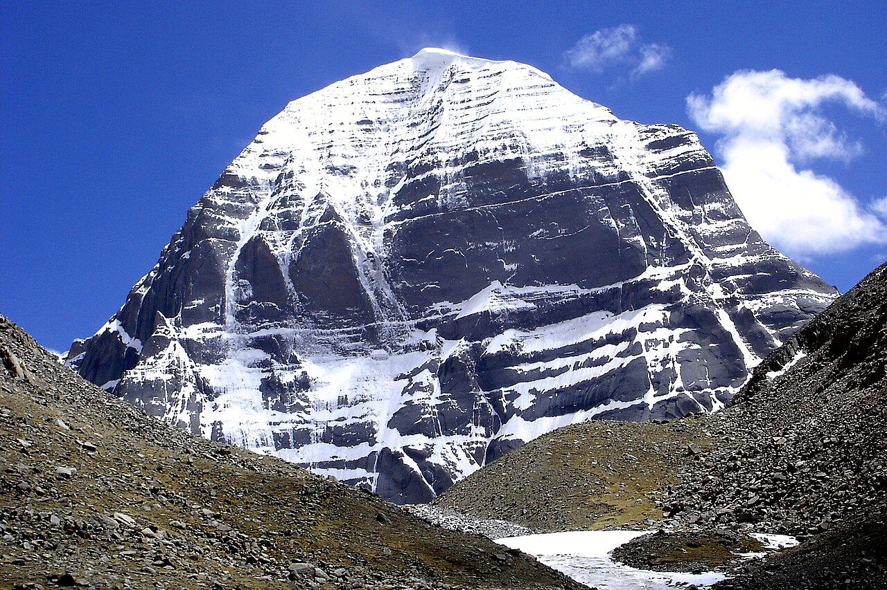

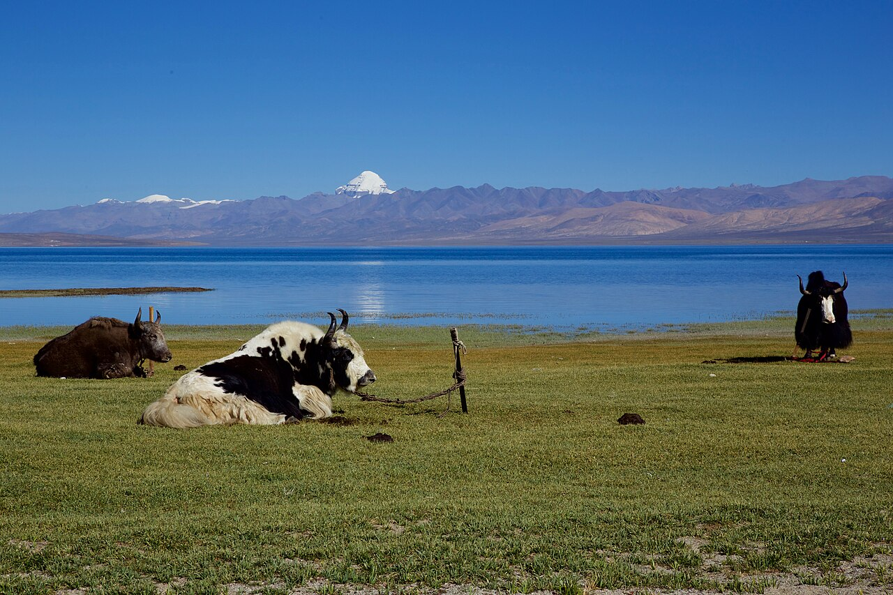
玛旁雍措湖岸。非冬季景观参考。 摄影：Jean-Marie Hullot；CC BY-SA 4.0 · 图片来源。

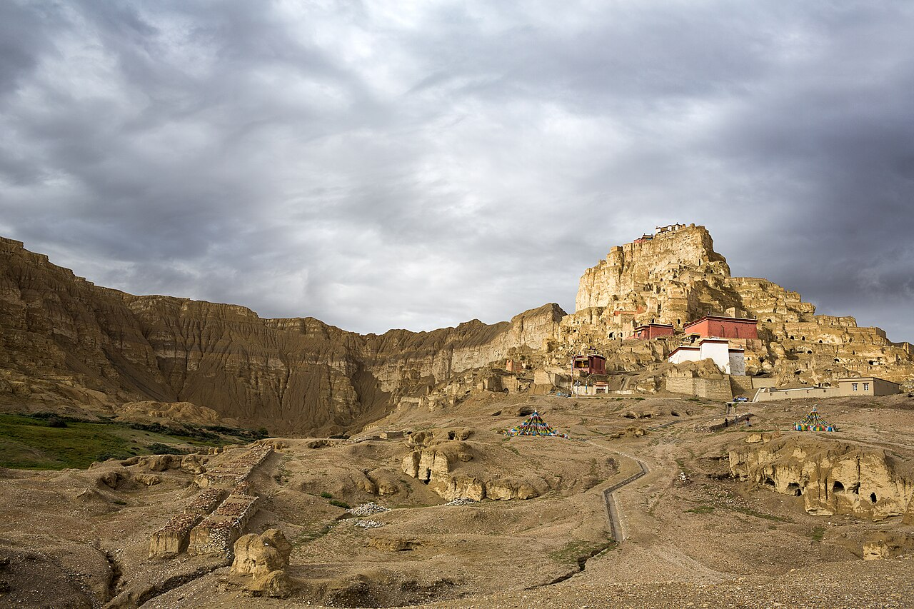
古格王国遗址。遗址与周围土色山体的关系。 摄影：squallgold；CC BY-SA 4.0 · 图片来源。

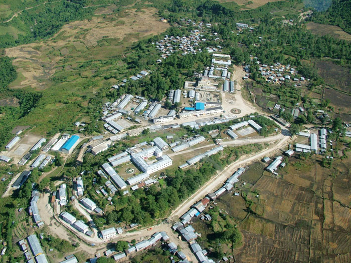
墨脱县城与绿色山坡。非冬季城镇景观参考。 摄影：卢传雄；CC BY-SA 3.0 · 图片来源。

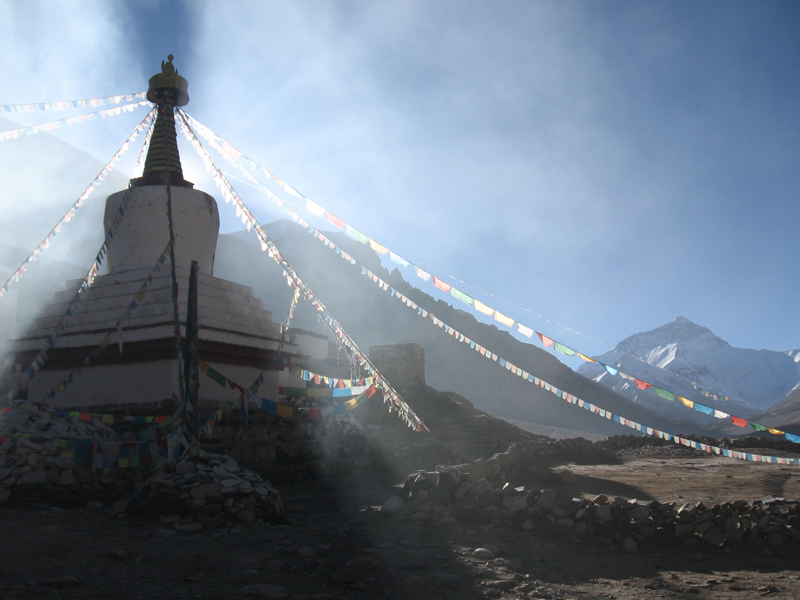
绒布寺方向的珠峰北壁。历史实景，用于珠峰备选路线的景观比较，非当期营地通行说明。 来源：abogada samoana；CC BY-SA 2.0。

稻草人七条参考路线
只比较原线路设计，不看团期，也不表示冬季照搬可行。天数为既有资料保存版本，官网后续可能调整。
| 线路 | 保存天数 | 可借鉴内容 |
|---|---|---|
| 西藏印象 | 9天 | 林芝到拉萨，再向珠峰延伸，羊湖放在返程 |
| 阿里 荒野与文明 | 14天 | 珠峰、吉隆、神山圣湖、古格和藏北湖泊；不可直接压成12天同等内容 |
| 库拉岗日 探寻山南秘境 | 8天 | 山南寺院、哲古措、白玛林措与介久措，再经普莫雍措和羊湖回程 |
| 隐逸藏东 金秋 | 8天 | 鲁朗、波密、然乌方向折返，再转南迦巴瓦；金秋内容不等于冬季体验 |
| 隐逸藏东 冬境墨脱 | 8天 | 墨脱雨林、冰川方向、南迦巴瓦；道路和冰川限制须分别确认 |
| 神隐藏地之东 稻草人与松赞 | 7天 | 波密三晚、来古与南迦巴瓦住宿，借鉴连住而非每天换酒店 |
| 隐逸藏东 桃花 | 8天 | 波密、朗秋、索松村、巴松措；桃花季主题不适用于圣诞 |
三条补充候选
- N1 江孜帕里亚东沟慢线，12天：江孜人文与南坡谷地；需核实边境手续、高山进出道路和住宿，受阻时缩为江孜日喀则文化慢游。
- N2 山南人文勒布沟往返，12天：泽当寺院与门巴村落、森林峡谷；谷底较暖不等于进出山口可通行，条件不足则只保留山南文化。
- N3 拉萨观鹤山南人文慢线，7天：拉萨两整天、林周区域观鹤和山南文化；不为填满假期强加高山支线，鸟况不能保证。